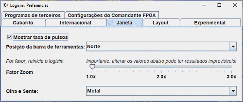

A guia Janela

Esta guia inclui as preferências que afetam a aparência da janela principal usada pelo Logisim.
-
Mostrar a taxa de pulsos : Se selecionada, quando a alternância de clock estiver habilitada, o Logisim exibirá uma medida da taxa na qual ele será capaz de executar tais alternâncias. A taxa alternâncias é medida pela média ao longo das últimas 1.000 alternâncias. (A desativação das alternâncias ou a alteração na taxa máxima de alternâncias irá limpar seu histórico.)
A taxa de alternâncias real pode ser muito menor do que aquela selecionada, porque o Logisim não consegue simular circuitos grandes em ritmo muito rápido. Por exemplo, se velocidade máxima do Logisim para um circuito razoavelmente grande for de 16 Hz; ainda que seja selecionada uma taxa mais rápida, a velocidade real não será superior a 16 Hz.
-
Barra de localização : Este menu do tipo drop-down serve para configurar a localização da barra de ferramentas na janela global. A barra de ferramentas pode ser colocada em qualquer uma das quatro bordas da janela, descritas como norte, sul, leste e oeste. Ele também poderá ficar oculto, ou colocado "no meio" - isto é, mais para a esquerda da tela, mas à direita do painel de explorador e da tabela de atributos.
-
Fator zoom: Permite-lhe definir um factor de zoom em toda a interface. Isto é para uso em monitores HD. Você deve preferir usar as possibilidades do sistema operacional para isso.
Necessidade de reiniciar o programa. -
Aspecto da interface: Permite-lhe seleccionar uma série de aspectos da interface a experimentar de acordo com os seus gostos.
Necessidade de reiniciar o programa.
Próximo: A guia Layout.